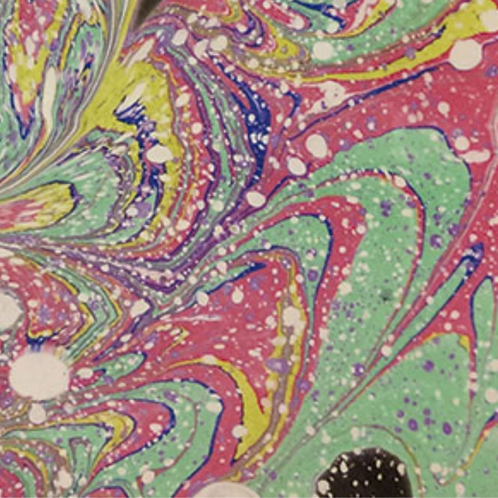

Taller marmolado textil
Centro CCCQS
Aprenderemos la técnica del marmoleado paso a paso: como preparar el agua, trabajo con las pinturas y técnicas básicas para crear diferentes efectos en el agua. Ésta es una técnica sumamente relajante, que te permitirá crear diseños únicos.